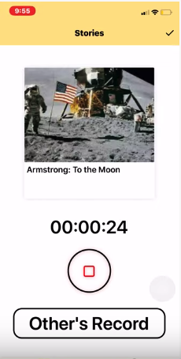
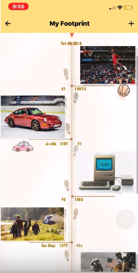
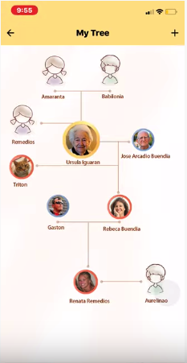

Everyone has their unique stories, and often, those stories are representations of their past experiences. And
this is especially true for the elderly.
However, many of their knowledge and experience are often lost through generations since the children and
grandchildren are busy in their own life.
We believe those legends should be preserved.
Nowadays, with the population aging, more and more stories get lost. We want to solve this problem and save all
these stories with our product, LEGEND.
Japan has serious aging problems. By researching on Japan, we can know the potential needs of our Product in the
serious aging country.
After 1995, the population over 64 years old increases dramatically. From the age dependency chart, the ratio of
elder exceeds that of young people after 1997.
This means aging problem is both worldwise and specific to regions. We need to do more case study to better
understand the needs.
The stories page displays the stories with the date it is recorded. Users can click on the recordings and
listen to it or read the converted text.

Record Page
Users can click to record their own memory about this specific prompt or event. When it is done, it will be
automatically converted. Users can also swipe to the next prompt if they are not interested, and listen to
other people's recordings as well.

Event Timeline
Automatically recognize the content of the recordings and link it to the timeline. It shows the life of a
person since birth.

Family Tree
This feature displays the family tree, where the user can read or listen to the memories with their family
members and friends.
The silver market is an expanding market with a large original size. In 2040 there will be more than 85 million
people in the US who are older than 65, while the elder people own much more money and more likely to spend
money
on their health and loneliness than the youngsters.
Currently, there are not many competitors in this field. There are no existing direct competitors, while
indirect
competitors contain journalists, and diary apps which are not specifically focusing on the silver market.
With a verified market and a rigid demand, LEGEND is the best solution for the elders’ loneliness problem.